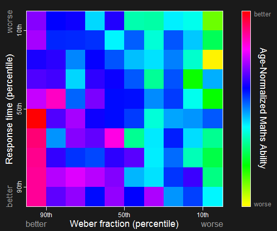

Decile Plot
Loading decile images...
Play

In this graph, each square represents an average; the relationship between the precision of the Approximate Number System (w, RT) and school mathematical ability (colour) is evident as a rainbow from the bottom left corner (better ANS precision) to the top right corner (worse ANS precision). A more precise gut Number Sense (ANS) correlates with better school mathematical ability across the lifespan.
Over 10,000 people took the Approximate Number System (ANS) dots test online (visit panamath.org to test yourself). In this plot we've grouped people of the same age together within each square based on their performance during the ANS test. These groups are arranged in deciles from better to worse performance. The color of each decile square shows the average methematical ability for the people within that square (empty squares at older and younger ages are coloured grey).
While the colours scintillate, the gradient from better mathematical ability to poorer mathematical ability remains visible across the lifespan.
We've made this interactive data graph recordable so that you can create a copy of the movie to show in your own presentations without being connected to the web. The recorded movie will look like the one you are currently watching.
Clicking the Save Movie button above opens a dialog box where you can name the file and save it to your own computer. The movie will be a 10 MB animated .gif file. To play the movie, open this file in QuickTime Player, a web browser, or copy it to Microsoft Powerpoint and view it in Slide Show mode.